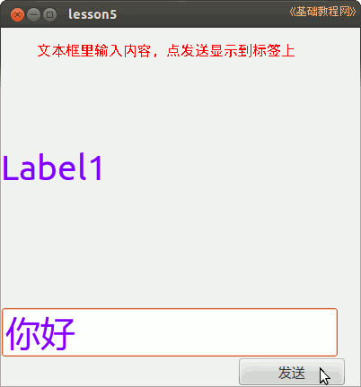

2014-2015 第一学期九年级程序设计教学设计
作者：TeliuTe 来源：基础教程网
五、学会使用文本框 返回目录 下一课
（一）教学设计
1、学习目标：
2、注意事项：绕过弯来，既不要跳也不要落，一楼过了二楼
3、教学过程：
1）教师准备学案和板书；
2）学生整队进入，开机抄黑板上笔记；
3）教师讲解板书演示操作；
4）学生打指法、日志、完成操作；
5）教师打勾记录学生指法成绩，检查日志和操作；
注：学生抄完笔记就开始打指法、日志，老师讲完后再继续完成；
（二）板书设计(学生笔记)
05学会使用文本框TextBox
1.文本框用来输入文字
2.选中组件，设置属性
3.点击按钮，发送文本，清空文本框
label1.text=textbox1.text
textbox1.text=""
操作图示：

（三）课后记
2014-10-21 12:00
第5课 学会使用文本框
1.新建文件夹，新建工程，双击打开
2.右下角工具箱，画一个A标签
3.找到小abc，画一个文本框，一个按钮
label1.text=textbox1.text
textbox1.text=""
--
提醒绕弯，提高能力的，编程序是
让老师改错误就要敲一棍子，错误是要有代价的
--
调整字体颜色的时候，多选后改字体会将组件大小调为0
再改就不好选了，偶尔会出错，没找到规律
--
三个之间是一个链条，标签、文本框和按钮
学生有些疲惫不堪的感觉，上课不积极还得想想办法
--
4班也是，来了几个然后敲铃了还没来几个
让出去等着先，一会一块进来，急了也没用
--
1班学生活跃些，慌慌张张的出错也多
做界面的时候就错了，多了几个组件，把label当按钮了
--
帮助学生改错费许多时间，检查就会耽误了
前面抄笔记的时候没有要求，自己接着上一个班就进来了
--
“发送”上的文字不知道在那里修改
要么用属性修改，要么用代码修改
返回目录 下一课
本教程由86团学校TeliuTe制作|著作权所有
基础教程网：http://teliute.org/
美丽的校园……
转载和引用本站内容，请保留作者和本站链接。